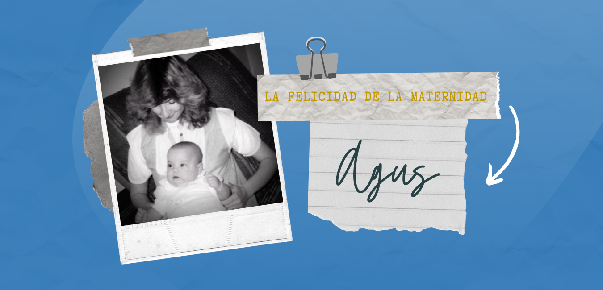

Alla fine del 1983 Cecilia è rimasta in cinta, fatto ricevuto con emozione e gioia dalla giovane coppia e da tutta la famiglia.
Nel febbraio del 1984 dapprima un disturbo e poi una piaga nella sua lingua, hanno determinato studi medici che hanno manifestato un tumore maligno. Cecilia ha rifiutato qualsiasi tipo di cura che potesse far del male al bambino. Amava la vita: la sua, quella di sua figlia in gestazione, quella della sua famiglia e di tutti. Come risposta si è immersa nel presente, aggrappandosi alla sua profonda fede cristiana ed ai suoi affetti.
Per non far del male al bambino, scelse l’estirpamento di parte della lingua e della catena gangliare fino sotto il mento. Nonostante questo intervento il tumore ha continuato a svilupparsi.
È stato allora quando tutta la comunità ha visto l’ “accelerazione” nella vita spirituale di Ceci; vivendo con intensità ogni momento presente, totalmente consegnata alla volontà di un Dio che è Amore. E per compiere questo disegno si è appoggiata alla sua profonda fede, all’acettazione amorosa di questo dolore come “Gesù Abbandonato”, all’affetto del suo sposo, familiari, amici, alla forza dell’unità ed alla vicinanza con coloro che condividevano il suo ideale di vita.
María Agustina è nata nel luglio del 1984 e la sua presenza ha ridefinito la vita domestica. Cecilia nel suo diario, descriveva così la routine giornaliera:
“... la mattina presto in genere è papà a darti il biberon, poi si danno il cambio tra nonna Angelita, nonno Manolo e pure la zia María Inés che in ogni attimo libero, viene a stare con noi, quando c’è lei sei esclusivamente nelle sue braccia. Adesso è la nonna a farti da mamma giacchè io ancora non ho la forza di farlo, il nonno ti coccola tutto il tempo e Papà è in uno stato... come fosse un nonno babbeo, ripete tutto il tempo ‘hai visto che bella figlia abbiamo?”
Cecilia aveva le preoccupazioni proprie di ogni genitore e viveva la felicità della maternità. Nonostante ciò le circostanze in cui assumeva quel ruolo e l’evoluzione spirituale che l’accompagnava hanno dotato la sua maternità di nuovi significati. Si è occupata di lasciare testimonianza scritta, in modo che sua figlia potesse leggerla di prima mano, di tutto l’amore che sentiva verso di lei ed il significato dell’esperienza che stava attraversando. In quasi tutte le sue lettere, come pure nel suo diario, descriveva María Agustina con estrema tenerezza, dettagliando le sue caratteristiche fisiche, la sua personalità, la sua crescita, il suo progredire ed i sentimenti che suscitava in lei. La considerava un dono di Gesù, riconosceva che operava in lei come un balsamo ed affermava che irradiava pace e calore.
Maria era in genere il suo modello di femminilità ed in particolare di maternità. Quando soffriva per non essere accanto a sua figlia o per non poter curarsi di lei per le proprie limitazioni fisiche, evocava il dolore della madre di Gesù ai piedi della croce e pensava all’impotenza che dovrà aver sentito non potendo prenderlo o consolarlo, ma soltanto guardarlo e chiedere per lui. Metteva Maria Agustina sotto l’alone protettivo della Vergine, fidandosi che questo centuplicherebbe le cure che riceveva.